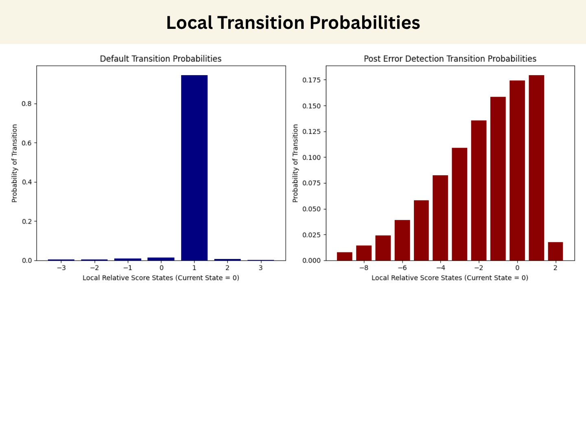

This section contains the detailed pseudocode for the OuterHMM as presented in Section 4 of the paper.

Figure 1. Local transition probabilities for the default and post error detection cases.
\begin{algorithm}
\caption{Precompute Pitch Emission Table}
\begin{algorithmic}
\REQUIRE Chord sequence $\mathcal{C} = (c_1,\dots,c_N)$,
pitch error probabilities
$p_{\text{correct}}, p_{\text{semi}}, p_{\text{whole}}, p_{\text{oct}}, p_{\text{near}}$,
floor probability $p_{\text{other}} \ll 1$
\ENSURE Emission table $\mathbf{B} \in \mathbb{R}^{N \times 128}$,
where $\mathbf{B}[i, p]$ is the likelihood of observing pitch $p$ at state $i$
\STATE Initialise $\mathbf{B}[i, p] \leftarrow p_{\text{other}}$ for all $i, p$
\FOR{$i \leftarrow 1$ \TO $N$}
\STATE \COMMENT{Compute disjoint pitch error neighbourhoods for chord $c_i$}
\STATE $C \leftarrow c_i$ \COMMENT{correct pitches}
\STATE $\mathit{Semi} \leftarrow \{p \pm 1 : p \in c_i,\ 0 \le p{\pm}1 < 128\} \setminus C$
\STATE $\mathit{Whole} \leftarrow \{p \pm 2 : p \in c_i,\ 0 \le p{\pm}2 < 128\} \setminus (C \cup \mathit{Semi})$
\STATE $\mathit{Oct} \leftarrow \{p \pm 12 : p \in c_i,\ 0 \le p{\pm}12 < 128\} \setminus (C \cup \mathit{Semi} \cup \mathit{Whole})$
\STATE $\mathit{Near} \leftarrow \{x : \exists\, p \in c_i,\ p{-}11 \le x \le p{+}11,\ 0 \le x < 128\}
\setminus (C \cup \mathit{Semi} \cup \mathit{Whole} \cup \mathit{Oct})$
\STATE \COMMENT{Assign probabilities, distributing each budget evenly across the set}
\FORALL{$p \in C$}
\STATE $\mathbf{B}[i,p] \leftarrow p_{\text{correct}} / |C|$
\ENDFOR
\FORALL{$p \in \mathit{Semi}$}
\STATE $\mathbf{B}[i,p] \leftarrow p_{\text{semi}} / \max(1,|\mathit{Semi}|)$
\ENDFOR
\FORALL{$p \in \mathit{Whole}$}
\STATE $\mathbf{B}[i,p] \leftarrow p_{\text{whole}} / \max(1,|\mathit{Whole}|)$
\ENDFOR
\FORALL{$p \in \mathit{Oct}$}
\STATE $\mathbf{B}[i,p] \leftarrow p_{\text{oct}} / \max(1,|\mathit{Oct}|)$
\ENDFOR
\FORALL{$p \in \mathit{Near}$}
\STATE $\mathbf{B}[i,p] \leftarrow p_{\text{near}} / \max(1,|\mathit{Near}|)$
\ENDFOR
\ENDFOR
\RETURN $\mathbf{B}$
\end{algorithmic}
\end{algorithm}
\begin{algorithm}
\caption{Outer-Product Viterbi Update Step}
\begin{algorithmic}
\REQUIRE Previous state probability vector $\boldsymbol{\delta} \in \mathbb{R}^N$,
binary pitch observation $\mathbf{o} \in \{0,1\}^{128}$,
emission table $\mathbf{B}$,
banded transition matrix $\boldsymbol{\alpha}$ (neighbourhood $[-D_2, D_1]$),
skip vector $\mathbf{S}$, resumption vector $\mathbf{r}$
\ENSURE Normalised state probability vector $\boldsymbol{\delta}' \in \mathbb{R}^N$
\STATE \COMMENT{Outer-product observation likelihood: rows of $\mathbf{B}$ weighted by $\mathbf{o}$}
\STATE $\mathbf{b} \leftarrow \mathbf{B} \cdot \mathbf{o}$ \COMMENT{$\mathbf{b} \in \mathbb{R}^N$,\quad $b_i = \sum_p \mathbf{B}[i,p]\cdot o_p$}
\STATE \COMMENT{Global skip: maximum probability of any state being skipped}
\STATE $g^* \leftarrow \max_j\,(\delta_j \cdot S_j)$
\FOR{$i \leftarrow 1$ \TO $N$}
\STATE \COMMENT{Local Viterbi max over the banded neighbourhood of state $i$}
\STATE $\ell^* \leftarrow \max_{j \in [\max(1,\,i-D_2),\,\min(N,\,i+D_1)]}\; \delta_j \cdot \alpha_{j,i}$
\STATE \COMMENT{Skip contribution: resuming at $i$ weighted by global skip max}
\STATE $s_i \leftarrow r_i \cdot g^*$
\STATE \COMMENT{Viterbi–skip competition}
\STATE $\delta'_i \leftarrow b_i \cdot \max(\ell^*,\; s_i)$
\ENDFOR
\STATE \COMMENT{Normalise; fall back to uniform if all probabilities collapse}
\IF{$\sum_i \delta'_i > 0$}
\STATE $\boldsymbol{\delta}' \leftarrow \boldsymbol{\delta}' \;/\; \sum_i \delta'_i$
\ELSE
\STATE $\boldsymbol{\delta}' \leftarrow \mathbf{1} / N$
\ENDIF
\RETURN $\boldsymbol{\delta}'$
\end{algorithmic}
\end{algorithm}
\begin{algorithm}
\caption{Hesitation Detection}
\begin{algorithmic}
\REQUIRE Current IOI $\tau$,
sliding IOI buffer $\mathcal{I}$ (length $K$),
most recently observed pitch $p_{\text{in}}$,
current state estimate $\hat{q}$, chord sequence $\mathcal{C}$,
neighbourhood half-width $\rho$,
IOI ratio threshold $\theta$,
flags $f_{\text{ioi}},\, f_{\text{pitch}}$ (enable each hesitation source)
\ENSURE Boolean flag $\mathit{hesitation}$
\STATE \COMMENT{Update rolling IOI statistics}
\STATE Remove oldest entry from $\mathcal{I}$; append $\tau$
\STATE $\bar{\tau}_{\text{prev}} \leftarrow \bar{\tau}$
\STATE $\bar{\tau} \leftarrow \operatorname{mean}(\mathcal{I})$
\STATE \COMMENT{Collect pitches in neighbourhood of current state}
\STATE $\mathcal{N} \leftarrow \bigcup_{k=\max(1,\,\hat{q}-\rho)}^{\min(N,\,\hat{q}+\rho)} c_k$
\STATE \COMMENT{Rule 1: IOI ratio spike}
\IF{$\bar{\tau} > \theta \cdot \bar{\tau}_{\text{prev}}$}
\RETURN $f_{\text{ioi}}$
\ENDIF
\STATE \COMMENT{Rule 2: observed pitch outside neighbourhood chord pitches}
\IF{$p_{\text{in}} \notin \mathcal{N}$}
\RETURN $f_{\text{pitch}}$
\ENDIF
\RETURN $\textbf{false}$
\end{algorithmic}
\end{algorithm}
\begin{algorithm}
\caption{OuterProductHMM — Online Alignment Step}
\begin{algorithmic}
\REQUIRE Observation pair $(\mathbf{o}, \tau)$: pitch vector and IOI;
persistent state: $\boldsymbol{\delta}$, $\hat{q}$, chord accumulator $\mathbf{o}^*$;
default and hesitation transition matrices $\boldsymbol{\alpha}_{\text{def}},\, \boldsymbol{\alpha}_{\text{hes}}$;
emission table $\mathbf{B}$, score note array, chord sequence $\mathcal{C}$
\ENSURE Aligned beat position, most probable score note identifier
\STATE \COMMENT{Short IOI: chord is still arriving — accumulate pitches, do not advance state}
\IF{$\tau < \tau_{\min}$}
\STATE $\mathbf{o}^* \leftarrow \max(\mathbf{o}^*,\, \mathbf{o})$ \COMMENT{element-wise max $=$ chord union}
\RETURN $\hat{q}$
\ENDIF
\STATE \COMMENT{Long IOI: new chord boundary — run full update}
\STATE $p_{\text{in}} \leftarrow \arg\max_p\, o_p$ \COMMENT{single most likely input pitch}
\STATE $\mathit{hesitation} \leftarrow \text{DetectHesitation}(\tau,\, p_{\text{in}},\, \hat{q})$ \COMMENT{Algorithm 3}
\STATE \COMMENT{Select transition matrix based on hesitation flag}
\IF{$\mathit{hesitation}$}
\STATE $\boldsymbol{\alpha} \leftarrow \boldsymbol{\alpha}_{\text{hes}}$
\ELSE
\STATE $\boldsymbol{\alpha} \leftarrow \boldsymbol{\alpha}_{\text{def}}$
\ENDIF
\STATE $\mathbf{o}^* \leftarrow \mathbf{o}$ \COMMENT{reset chord accumulator to current observation}
\STATE \COMMENT{Outer-product Viterbi update (Algorithm 2)}
\STATE $\boldsymbol{\delta} \leftarrow \text{ViterbiStep}(\boldsymbol{\delta},\, \mathbf{o}^*,\, \boldsymbol{\alpha})$
\STATE $\hat{q} \leftarrow \arg\max_i\, \delta_i$
\STATE \COMMENT{Find most probable score note at the aligned state}
\STATE $\boldsymbol{\beta}_{\text{in}} \leftarrow \text{BuildEmissionTable}(\{p_{\text{in}}\})$ \COMMENT{single-pitch table, Algorithm 1}
\FORALL{$p \in c_{\hat{q}}$}
\STATE $\mathbf{e}_p \leftarrow$ one-hot vector for pitch $p$
\STATE $\mathrm{prob}[p] \leftarrow \boldsymbol{\beta}_{\text{in}}[0] \cdot \mathbf{e}_p$
\ENDFOR
\STATE $p^* \leftarrow \arg\max_p\; \mathrm{prob}[p]$
\STATE \COMMENT{Look up the score note identifier for $p^*$ at the aligned beat}
\STATE $\beta_{\text{aligned}} \leftarrow$ beat position of state $\hat{q}$
\STATE $\mathrm{id}^* \leftarrow$ score note with onset $= \beta_{\text{aligned}}$ and pitch $= p^*$
\RETURN $\beta_{\text{aligned}},\; \mathrm{id}^*$
\end{algorithmic}
\end{algorithm}